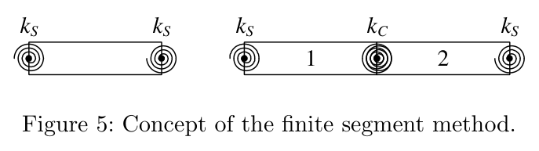
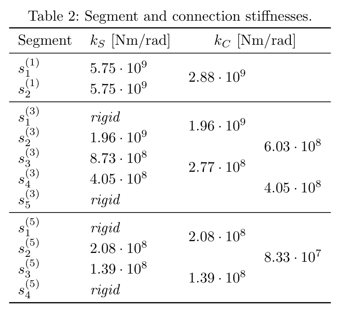
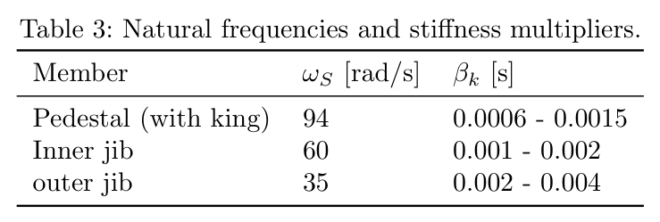
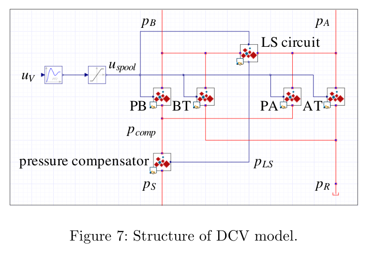
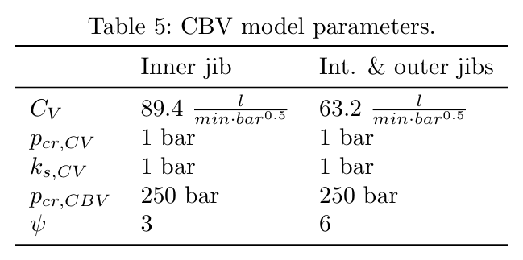
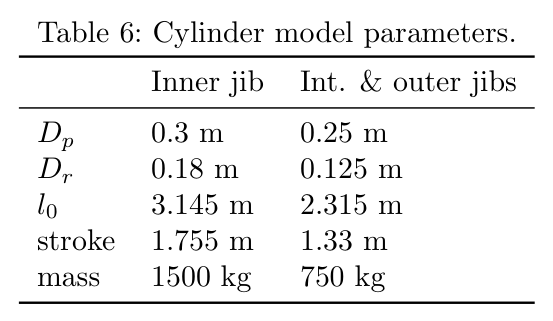
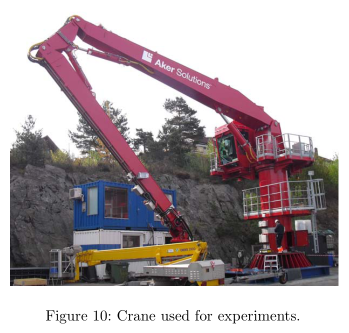
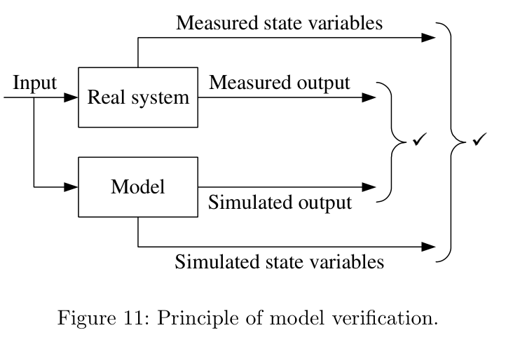
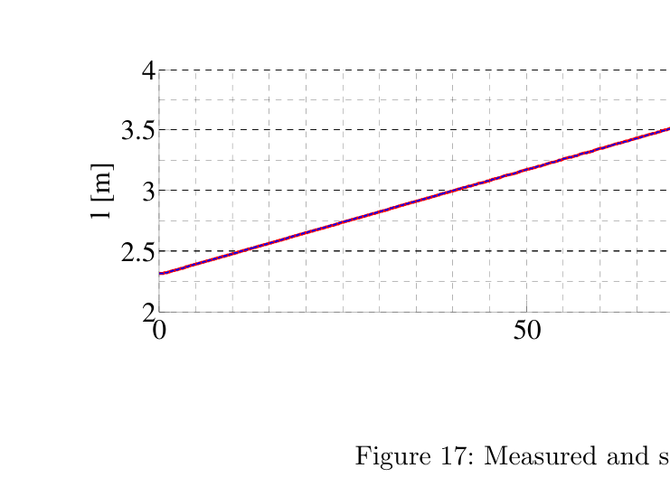

논문 심화 노트 · B / 유압 구성요소·계통 식별
Analysis of Offshore Knuckle Boom Crane — Part One: Modeling and Parameter Identification
한줄 요약
해양 시추선의 파이프 취급용 유압 너클붐 크레인(공급압 210 bar, 실린더 3개, 지브 길이 7~12 m)을 다물체(유연 세그먼트 포함) + 회색상자 전기유압 모델로 만들고, 부품 자료가 부족한 현장 엔지니어의 처지에서 시운전 데이터만으로 ① 정상상태 실린더 힘 → 질량·질량중심 미세조정과 실린더 마찰(정지 + 압력 비례), ② 정상상태 압력 → 카운터밸런스밸브 블랙박스 계수, ③ 압력 진동 주파수 → 구조 강성 배율(0.55)·감쇠·유효 체적탄성계수(5500 bar) 를 차례로 식별해 검증한 연구다.
1. 연구 배경
1.1 문제 정의 (§1, p.1~2)
- 해양 시추 장비는 고가·복잡·소량 생산이라 시제품을 만들어 시험하기 어렵다 → 시간 영역 시뮬레이션이 설계 도구가 됐지만, 실제 거동을 재현하는 모델을 만드는 것이 난제.
- 특히 유압 부품 제조사는 시뮬레이션에 필요한 자료(밸브 특성, 보상기, 마찰)를 주지 않는다. 물리 모델은 세우기 어렵고 세워도 검증이 안 된다(p.1~2).
- 크레인 구조 유연성이 전체 동특성에 크게 영향(Henriksen 2011, Bak 2011)하지만 실험 검증 사례가 없었다.
1.2 기존 연구 분류 (p.2)
| 분류 | 대표 | 특징 | 한계 |
|---|---|---|---|
| 크레인 일반 모델링·제어 | Hiller 1996, Abdel-Rahman 2003 | 모델링 기법·제어 개념 정리 | 해양 크레인 실험 없음 |
| 이동식(트럭) 크레인 | Ellman 1996, Mikkola & Handroos 1996, Esque 1999/2003, Hansen 2001, Nielsen 2003 | 동특성 잘 문서화·실험 검증 | 유연성 큰 이동식 크레인 특유 |
| 해양 붐 크레인 | Than 2002, Bak 2011 | 구조 유연성 포함 모델 | 실험 검증 없음 |
| 유압 부품 모델링 | 일반 문헌 | 잘 정립 | 자료 부족·물리 불완전으로 검증 난항 → 일부 부품은 새 접근 필요 |
1.3 연구 기여 (p.2, §6)
- 유연 세그먼트(finite segment) 다물체 + 회색상자 유압 모델의 적정 상세도를 제시하고 실험으로 검증.
- 카운터밸런스밸브(CBV)를 두 압력비(μx, μL)로 유량을 계산하는 블랙박스 모델(식 15~22) 제안.
- 시운전 데이터로 3단계 보정(정상 힘 → 정상 압력 → 동특성)을 시연하고, 앞 두 단계는 최적화·마지막은 스케일링으로 푸는 실용 절차 제시.
2. 시스템 및 방법론
2.1 대상 크레인 (§2, p.2~3)

- 공급: HPU 정압 pS = 210 bar, 리턴 pR = 0.
- 유압 회로 3개(지브당 1개). 내부 지브는 서보밸브 + 외부 배출 CBV 1개, 중간·외부 지브는 압력보상 비례밸브(LS) + 비배출 CBV 2개(Fig. 2, 3).
- 제어: 조이스틱 uJS → 제어기 → 밸브 신호 uV, 실린더 내장 위치센서. 개루프 모드(조이스틱이 밸브로 직결)와 폐루프 모드가 있고, 식별은 개루프로 한다.


2.2 기계 모델 (§3, p.4~6)

= 72 − 12 − 15 − 20 − 12 − 9 = 4 (1)
자유도 4 = 실린더 구동 지브 3 + 요크 회전 1(유압 모터, 이번엔 고정용).
유연성 — 유연 세그먼트법(§3.2): 유연 부재를 강체 조각으로 나누고 조각 사이를 회전 관절 + 회전 스프링(·댐퍼)으로 잇는다.



감쇠(§3.3): 강성 비례 감쇠.
ζS 는 용접·볼트 이음이 있는 금속 구조에서 0.03~0.07(Adams & Askenazi 1999). ωS 는 각 부재를 외팔보로 고정하고 충격을 준 무감쇠 시뮬레이션에서 읽는다.

2.3 유압 모델 개요 (§4, p.6~10)
기계는 백색상자(물리), 유압은 반물리(회색상자). 이유: 부품 자료 부족 + 물리 모델은 계산량 과다. 신호는 −1..1 정규화, 부품 동특성은 전달함수.
유압 모델 · 입력 → 밸브 → 실린더 → 다물체 → 출력
개루프
압력보상기 식(10), LS 식(11)
Q=A(μx)·sn(μx) 식(19~22)
3. 핵심 기술
3.1 밸브 오리피스와 유량계수 (§4, p.6~7)
| 기호 | 뜻 |
|---|---|
| ξ ∈ [0,1] | 상대 열림. 신호로 제어되거나(DCV) 압력 평형으로 정해짐(체크·릴리프) |
| CV | 유량계수. 데이터시트 특성곡선의 공칭 유량·공칭 압력강하로 얻음 |
| Cd, Ad | 방출계수·방출 면적 — 보통 미공개라 CV 로 대체. Cd 상수·Ad 만 열림에 비례 가정 |
이 접근은 스풀 위치 폐루프·디더가 있는 DCV 엔 잘 맞지만, 압력제어밸브(CBV)엔 마찰·히스테리시스·비선형 면적·유량힘 때문에 자주 실패 → 블랙박스(§3.3).
3.2 방향제어밸브 DCV (§4.1, p.7~8)

- 서보밸브(내부 지브): 대역폭은 데이터시트 Bode 선도에서(진폭 의존 비선형이지만 2차로 충분).
- 압력보상 DCV(PVG32): 데이터시트에 대역폭이 없어 별도 주파수응답 시험(Bak & Hansen 2012)으로 ωV = 30 rad/s, ζV = 0.8. 이 값은 파일럿·주 스풀·LS·보상기를 합친 "명령→유량" 전체 동특성이다.

압력보상기와 LS:
첫 경우가 정상(미터링 에지 압력강하 p₀ 유지), 둘째는 부하압이 공급압에 가까워 p₀ 를 못 지키는 압력 포화, 셋째는 역류 방지 체크밸브 기능.

3.3 카운터밸런스밸브 CBV (§4.2, p.8~9)
체크밸브(식 6 + 열림 (12)):
크래킹(열리기 시작) 조건:
블랙박스: 두 압력비로 상태를 표현.
| 기호 | 뜻 |
|---|---|
| pL, px | 부하(실린더측) 압력, 파일럿 압력 |
| pcr, ψ | 크래킹 압력(250 bar), 파일럿 면적비(기하 3 / 6) |
| s | 크래킹선에서의 거리(양수면 열림) |
| A₀, A₁, n₀, n₁ | 실험 식별 계수(유량 지도 또는 §5.2 식별) |


3.4 실린더 (§4.3, p.9~10)
| 기호 | 뜻 | 값 |
|---|---|---|
| Ap, φAp | 피스톤 면적, 로드측 환형 면적 | Table 6: Dp 0.30/0.25 m, Dr 0.18/0.125 m → φ = 0.64 / 0.75 |
| v₀ | 0 속도 부근 마찰 전이 속도(수치 안정용) | 미기재 |
| βoil | 유효 체적탄성계수 | 초기 추정 → 식별 5500 bar |
| FS | 정지 마찰. 초기값 = 피스톤측 1 bar 상당 Ap·10⁵ | 외부 지브 4.9 kN → 식별 6.4 kN |
| Cp | 압력 비례 마찰 계수(2~3 % 상당) | 초기 0.02 → 식별 0.029 |

Ottestad 2012 의 5-파라미터 마찰(정지·쿨롱·속도·압력 의존)은 "실린더 전용 광범위 실험 없이는 못 정한다"고 보고 정지 + 압력 비례 두 항으로 축소했다(p.10).
4. 파라미터 식별 절차 (§5, p.10~16)


시험은 개루프 모드, 한 자유도씩(다른 실린더는 정지), 절차가 같으므로 외부 지브만 보고한다.

단계별 식별 · 정상 힘 → 정상 압력 → 동특성
fmincon (F̃p − Fp)² 식(27)(28)
→ mi, COGi 미세조정 + FS, Cp
fmincon (Q̃ − Q)² 식(34) → A0,A1,n0,n1 (+C1,C2)
구조 강성 ×0.55, βk 0.002/0.003/0.007, βoil=5500 bar
압력 진동 주파수 일치(Fig.19)
4.1 정상상태 힘 (§5.1, p.11~12)
강체 정적 모델에 측정 실린더 운동(Fig. 12)을 넣어 정상 힘을 계산하고, 측정 압력힘과 비교한다.
fmincon 으로 마찰(FS, Cp)과 질량·COG(CAD 값을 제약 안에서 조정)를 동시에 푼다. CAD 는 조립체의 모든 부품을 담지 못하므로 조정 여지를 둔다는 논리.


4.2 정상상태 압력 — CBV 식별 (§5.2, p.12~13)
측정 운동에서 CBV 유량 Q₁, Q₂ 를 계산하고, 측정 p₂·p₃ 와 정상상태 회로 모델로 p₁·p₄ 를 추정한 뒤 (19)(20) 으로 A₀, A₁, n₀, n₁ 을 푼다.
유효 파일럿 면적비: 기하 ψ = 6 이지만 내부 오리피스 두 개가 파일럿 압력을 낮춰 유효 ψ ≈ 1.95(난류·배압 0 가정). 실제로는 배압이 있고 난류가 아닐 수 있어 크래킹선을 보정:
신장(CBV₂ 활성): μL,2 = (p₃ − p₄)/pcr (30), μx,2 = p₁/p₃ (31). 수축(CBV₁ 활성): μL = (p₂ − p₁)/pcr (32), μx = p₄/p₂ (33).




4.3 동특성 (§5.3, p.14~16)
정상 수준은 맞지만 모델이 실제보다 뻣뻣했다. 남은 불확실 파라미터(구조 강성·감쇠·βoil)를 압력 진동 주파수가 맞도록 조정(진폭은 불확실 요인이 더 많아 후순위).
- 구조 강성 전부 55 % 로, 감쇠 배율 βk = 0.002 / 0.003 / 0.007 로 올림, βoil = 5500 bar(초기 추정의 약 절반).
- 신장 구간: 주파수·진폭 모두 일치(시작 가속 구간 제외). 수축 구간(CBV 활성·음의 부하): 주파수만 일부 일치, 진폭은 시뮬이 과감쇠.
- 원인 후보(p.15): 실린더 엔드스톱 미모델, 가속 유량에서 CBV 모델 부정확, 0 속도 부근 마찰 단순화.

저자의 해석(p.15~16): 강성을 반으로 줄여야 했던 것은 유연화하지 않은 부재(킹·중간 지브·기초)와 연결부의 유연성이 흡수된 것. β 5500 bar 는 순수 기름값보다 훨씬 낮지만 배관·호스 컴플라이언스를 포함한 유효값으로 Merritt 상한 100,000 psi(≈6900 bar) 아래라 타당. 감쇠 배율이 (5) 의 예측과 반대로 올라간 것은 모델 밖 부재·연결부 마찰 감쇠 때문.
5. 실험 결과 요약
| 단계 | 지표 | 결과 | 검산·비고 |
|---|---|---|---|
| ① | 정상상태 힘 | 측정·시뮬 수준 거의 일치(Fig. 14) | φ 검산 0.75/0.64 ✓; FS 6.4 kN = 1.3 bar 상당(초기 1 bar) |
| ② | CBV 유량 | 정상 유량 일치(Fig. 16) | n₀ 0.47 ≈ √ 법칙 |
| ② | 실린더 운동 | 일치(Fig. 17, DCV CV 수동) | 개루프 운동 재현 |
| ② | 정상 압력 | 일치(Fig. 18) | — |
| ③ | 압력 동특성 | 신장 ○, 수축 △(과감쇠) | 세 파라미터 상쇄 가능 |
| ③ | 식별 βoil | 5500 bar = 0.55 GPa | 광유 1.4~1.7 GPa 의 1/3; Merritt 상한 아래 |
| ③ | 구조 강성 배율 | 0.55 | 모델 밖 부재 유연성 흡수 |
| ③ | βk | 0.002 / 0.003 / 0.007 | (5) 예측 0.0006~0.004 보다 큼 |
6. 한계 및 향후 연구
논문이 명시한 것(원문 위치):
- 선회·요크 자유도 제외(§2). 평면 기구.
- 마찰 2-파라미터 축소, 0 속도 부근 단순(§4.3, §5.3).
- 엔드스톱 미모델, CBV 가속 유량 부정확(§5.3).
- 강성·감쇠·β 를 수동 스케일링(§5.3, §6).
- 유연화 안 한 부재·연결부 유연성이 강성 배율에 흡수됨(§5.3).
요약자 판단:
- 표본율·동기화·센서 정확도 미기재. 외부 지브 회로는 압력 두 개만 측정(p₁·p₄ 추정).
- 보정 데이터로 검증(홀드아웃 없음). 불확실성·신뢰구간 없음. 반복 횟수 미기재.
- 질량·COG 동시 조정은 정상 힘만으로 곱만 식별되는 문제를 "CAD 근처 제약"으로 우회 — Table 7 의 x₆ +57 % 가 그 흔적.
- 강성·감쇠·β 는 주파수 하나로 세 묶음을 맞춘 것이라 서로 상쇄될 수 있음을 저자도 인정 — 우리 β 문제와 같은 구조(심화 Q9).
한계 → 후속 연구
7. HR35 적용 대조와 후속 검증 과제
7.1 구성요소 대조
| 논문 요소 | HR35 실차 / 트윈 | 판정 | 비고 |
|---|---|---|---|
| 공급: 정압 HPU 210 bar | 엔진 구동 펌프, 릴리프 250 bar(실차 문서) vs 205.9 bar(트윈, iX35e 제원) | 🔴 상충·유량 한계 미모델 | 원문 요청 C 항 |
| DCV: 서보/압력보상 비례밸브, 2차 30 rad/s | MCV + 솔레노이드 비례밸브, 트윈 파일럿 시정수 0.05 s(assumed) | 🟡 구조 유사·수치 미측 | 밸브 단독 주파수응답 시험 후보 |
| 스풀 오버랩/언더랩(Fig. 8) | 트윈 spool_deadband 0.34/0.355/0.132(현장 측정), 언더랩 없음 | 🟡 | 리턴 에지 언더랩 유무 미확인 |
| CBV(홀딩·하중 유지) | HR35 홀딩밸브 유무 미확인(정적 처짐 35 s 6 µm 관측은 있음) | 🔴 미확인 | 압력 유지 특성 시험 |
| 실린더 면적비 φ | Bak 0.64 / 0.75 | 트윈 세 축 모두 0.7826(로드/보어 0.466 일괄 가정) | 🔴 로드 지름 실측 |
| 마찰: FS + Cp·|Fp| | 트윈: 쿨롱 Fc + 점성 b | 🟡 구조 다름 | Werner 2025 도 하중 비례 |
| βoil 5500 bar(식별) | 트윈 1000 bar(assumed, 붐 3.3 Hz 맞춤) | 🔴 1/5 | 심화 Q7·Q9 |
| 구조 유연성 55 % | 트윈 링크 강체, 차체 트랙 접촉 | 🟡 | 3 Hz 모드의 정체와 직결 |
| 개루프 램프 시험 | 현장 S1~S6 은 수동 폐루프 | 🔴 전용 시험 필요 | 현장 식별 README 도 같은 권고 |
7.2 후속 검증 과제
| # | 할 일 | 판정 기준 | 하지 말 것 | 비용 | 선행 |
|---|---|---|---|---|---|
| ① | 로드 지름 실측(붐·암·버킷) → φ 갱신 | 트윈 0.466 가정과 차이 > 10 % 면 장부 area_b 전부 재계산 | 보어를 로드에서 역산하지 말 것 | 현장 10분 | — |
| ② | 릴리프 압력 확정: 250 vs 205.9 bar. 정지 상태에서 실린더를 끝까지 밀어 최대 압력 카운트 확인(압력 변환식 선행) | 두 값 중 하나에 ±5 % 안이면 채택; 둘 다 아니면 사양 재조사 | 카운트 상태로 판정하지 말 것 | 현장 30분 | 압력 변환식 |
| ③ | 개루프 램프 왕복 시험(한 축씩, 느린 램프, 신장→수축): 정상 힘 계단(마찰)과 정상 압력 확보 | Fig. 14 형태로 방향 전환 계단이 보이고, 계단 폭을 하중에 대해 1차 적합했을 때 기울기 유의(95 % 신뢰구간이 0 제외)하면 Cp 항 채택 | 폐루프 자동 모드로 대체 금지; 두 축 동시 구동 금지 | 현장 1시간 | ① 압력 변환식 |
| ④ | 압력 유지(홀딩) 특성: 하중을 든 채 명령 0 으로 두고 압력·길이 시간이력 | 처짐률과 압력 감소 시정수 기록; CBV/홀딩밸브 유무를 회로도·실물로 확인 | 처짐이 없다고 홀딩밸브가 있다고 단정하지 말 것(마찰일 수 있음) | 현장 20분 | 압력 변환식 |
| ⑤ | 밸브 단독 주파수응답: 명령 정현파 스윕(작은 진폭) → 실린더 속도 응답, 대역폭·ζ 식별 | 2차 모델 적합 잔차 < 10 %; 결과 ωV 를 트윈 파일럿 시정수와 대조 | 통신 지연(CAN·ROS)을 밸브 지연에 섞지 말 것 — 명령 타임스탬프 별도 기록 | 현장 40분 + 분석 반나절 | ③ |
| ⑥ | β 분리 시험: 차체를 고정(잭업·받침)한 상태와 접지 상태에서 같은 급정지 압력 진동 주파수 비교 | 두 조건 주파수 차 > 10 % 면 3 Hz 모드에 접촉·구조 강성이 들어 있음 → β 는 재계산 | 한 조건 결과로 β 를 확정하지 말 것 | 현장 1시간(안전 검토 필수) | 안전 승인 |
| ⑦ | 오프라인: 트윈 β 를 5.5e8 로 바꾸고 붐 모드가 어디로 가는지, 그 차이를 접촉 강성으로 메꿀 수 있는지 감도 계산 | 모드 주파수 변화율과 필요한 접촉 강성 값을 표로 | 이 계산으로 값을 바꾸지 말 것(가역성 실험 설계용) | 오프라인 반나절 | — |
순서: ⑦ → ① → 압력 변환식(Werner 요약 §7 ②) → ②③④ → ⑤ → ⑥.
7.3 경고
한마디로 정리
- 핵심 방법은? — 자료 없는 부품은 회색/블랙박스로 두고, 개루프 램프 시험 하나로 정상 힘 → 정상 압력 → 동특성 순서로 식별.
- 핵심 결과는? — 정상상태는 잘 맞고, 동특성은 신장 구간만 일치; 유효 β 5500 bar, 구조 강성 55 %, 마찰 FS 6.4 kN·Cp 0.029.
- 한계는? — 홀드아웃·불확실성 없음, 강성·감쇠·β 상쇄, 수축(음의 부하) 과감쇠.
- HR35 에 주는 것은? — β 1000 bar 가 비물리적이라는 근거, 개루프 램프 시험 설계, 하중 비례 마찰의 두 번째 증거, 실린더 면적비 가정(0.466)의 점검 필요.
심화 탐구 기록
Q1. 백색·회색·블랙박스 — 이 논문은 무엇을 어디에 두었나
| 구성 | 색 | 이유 | HR35 트윈은 |
|---|---|---|---|
| 강체 다물체·기구학 | 백색(물리) | CAD 에서 질량·관성·기하 확보 | 백색(URDF·AGX) |
| 구조 유연성·감쇠 | 회색(물리식 + 배율) | kS=2EI/L 은 물리이나 조각 수·연결부는 근사 | 없음(강체) |
| DCV | 회색(2차 지연 + 오리피스 + 구간선형 열림) | 데이터시트에 CV 는 있고 대역폭은 별도 시험 | 회색(파일럿 1차 + 오리피스 + 불감대) |
| 압력보상기·LS | 회색(구간 함수 (10)(11)) | 보상기 자료 없음, p₀ 만 앎 | 없음(HR35 회로 종류 미확인) |
| CBV | 블랙박스 | 열린 뒤 유량이 물리식대로 안 감 | 없음(홀딩밸브 미확인) |
| 실린더 | 회색(압축성 물리 + 마찰 2항) | 5-파라미터 마찰은 실험 부담 | 회색(압축성 + 쿨롱/점성) |
교훈: "물리 모델을 더 정교하게" 가 아니라 "검증 가능한 상세도" 를 택했다. HR35 도 밸브·펌프 자료가 없으면 회색상자로 두고 실험 계수로 채우는 편이 검증 가능하다.
Q2. 유량계수 CV 검산 — 데이터시트 숫자가 맞는가
식 (8): CV = Qnom/√Δpnom. PVG32 의 CV = 37.8 l/(min·√bar), 보상기 설정 p₀ = 7 bar. 완전 열림에서 Q = 37.8×√7 = 100.0 l/min — PVG32 계열의 공칭 유량(100 l/min 급)과 일치한다. 서보밸브 111.8 l/(min·√bar) 는 35 bar 강하에서 661 l/min 급 대형 밸브다.
HR35 적용: 트윈 valve_cda_m2 는 assumed 다. MCV 사양(정격 유량·정격 압력강하)만 있으면 (8) 로 CV 를 바로 얻는다 → 원문 요청 C 항에 "정격 유량·정격 압력강하" 를 넣었다.
Q3. DCV 2차 모델과 열림 함수 — HR35 불감대와의 대응
- (9) 는 파일럿·주 스풀·보상기를 합친 명령→유량 전체의 2차 근사다. 30 rad/s(5 Hz), ζ 0.8 이면 계단 응답 상승 시간 ≈ 0.1 s 급. HR35 현장 총지연 0.15 s(명령→운동, CAN·ROS 포함)와 자릿수가 같다.
- Fig. 8 의 오버랩(미터링 에지가 중립 부근에서 닫혀 있는 구간 5~10 %)이 곧 불감대다. HR35 스택의 불감대 보상값(붐 0.28·암 0.30·버킷 0.132)과 현장 측정(0.27~0.41)이 이 오버랩에 해당한다.
- 언더랩(리턴 에지가 중립에서 조금 열림)은 중립에서 실린더 양 챔버가 탱크로 새는 구조라 하중 유지 능력에 직결된다. HR35 밸브에 언더랩이 있는지는 미확인 — 과제 ④ 의 홀딩 시험이 답한다.
Q4. CBV 크래킹 조건 (13)(14)(18) 유도
CBV 포핏에 작용하는 힘: 실린더측 압력 p₂ 가 시트 면적 A 에, 파일럿 압력 px 가 파일럿 면적 ψA 에, 스프링 예압이 반대로. 열리기 직전 평형: p₂A + pxψA = Fspring. 스프링 예압을 "파일럿 없이 열리는 압력" pcr 로 정의하면 Fspring = pcrA → (13) p₂ + ψpx = pcr.
비배출형은 스프링실이 밸브 출구(p₁)에 연결돼 출구 압력이 포핏을 닫는 방향으로 (1+ψ)A 에 작용 → (14) p₂ + ψpx = pcr + (1+ψ)p₁.
정규화: μx = px/pL, μL = pL/pcr 를 (13) 에 넣으면 pL(1 + ψμx) = pcr → μL,cr = 1/(1+ψμx) (18). ✓ 파일럿이 클수록(μx↑) 낮은 부하압에서 열린다.
유효 ψ. 내부 오리피스가 파일럿 압력을 낮추면 같은 외부 압력에서 실제 파일럿 힘이 작아지므로 ψ 가 작아 보인다(6 → 1.95). 배압·층류가 섞이면 μx 에 대한 비선형이 생겨 (29) 의 2차항 C₂ 가 필요했다.
Q5. CBV 블랙박스의 물리적 정합성 — Table 8 값 읽기
- Q = A sn 에서 s 는 "크래킹선 위로 얼마나 올라왔나"(무차원 압력 여유). n = 0.5 면 오리피스 Q ∝ √Δp 와 같다. 식별값 n₀ = 0.4707 은 그 근처이고 n₁ = 0.036 은 파일럿에 따라 지수가 약간 커진다는 뜻.
- A = 27.84 + 146.2 μx: 파일럿 비 μx 가 0→1 로 갈 때 A 가 6배 커진다. 파일럿이 포핏을 더 열어 면적을 키우는 물리와 정합.
- 식별 데이터는 정상상태 유량 30~65 l/min(Fig. 16). 그 밖(가속 유량)에서 부정확한 것은 저자도 인정 — 블랙박스는 데이터 범위 밖으로 외삽하지 않는다는 원칙.
Q6. 실린더 마찰 — 두 항으로 줄인 근거와 HR35 트윈 비교
| Bak (26) | Werner 2025 (20) | HR35 트윈 | |
|---|---|---|---|
| 형태 | FS + Cp|Fp| | π₁τm + π₂ (방향별) | Fc sat(v/vs) + bv |
| 하중 의존 | 압력힘에 비례(Cp 0.029) | 토크에 비례 | 없음 |
| 속도 의존 | 없음(0 부근 전이만) | 없음 | 점성 b |
| 방향 비대칭 | 없음(대칭) | 있음 | 없음 |
| 식별 | 정상 힘 fmincon | 상하 간격 1차 적합 | ζ 역산 |
두 독립 문헌이 하중 비례·속도 무관을 보고했다. 트윈은 반대 구조다. FS 초기값 "피스톤측 1 bar 상당"은 실용적 어림(외부 지브 4.9 kN)이고 식별값 6.4 kN 은 1.3 bar 상당. HR35 붐(Ø100 가정, 78.5 cm²)이면 1 bar 상당 FS ≈ 0.8 kN — 트윈 쿨롱 271 N 의 3배다. 어느 쪽이 맞는지는 과제 ③ 의 계단 폭으로 잰다.
Q7. 유효 체적탄성계수 — 왜 5500 bar 가 "타당"하고 1000 bar 는 아닌가
유효 컴플라이언스는 기름·공기·배관이 직렬로 더해진다(Merritt 1967, 보충 수식):
(보충: 표준 유효 체적탄성계수 식)
Bak: 1/βeff − 1/βoil = 1/5.5×10⁸ − 1/1.5×10⁹ = 1.15×10⁻⁹ Pa⁻¹ 이 배관·공기 몫. 크레인은 긴 호스가 있어 그럴 만하다.
HR35 트윈 β = 1×10⁸ Pa: 1/β = 1.0×10⁻⁸ Pa⁻¹ 로 Bak 총 컴플라이언스의 5.5배, Merritt 상한(6.9×10⁸)의 6.9배. 소형 굴착기의 짧은 배관에서 이런 값은 나오지 않는다. 남는 설명은 하나 — 붐 3.3 Hz 를 β 로만 맞추면서 실린더 밖의 유연성(구조·핀 유격·트랙-지면 접촉) 을 β 가 떠안았다.
Q8. 정상 힘으로 질량·COG 를 같이 조정하면 무엇이 식별되나
정상상태에서 실린더 힘은 각 강체의 중력 모멘트 합이다. 강체 i 의 기여는 mig (xicosθ − zisinθ) 꼴이라, 데이터가 θ 를 훑어도 얻는 것은 mixi 와 mizi 두 곱뿐이다(Werner 2025 요약 Q3 과 같은 결론). Table 7 이 그 증거: 질량은 0.4~4.5 % 만 움직이고 x₆ 이 57 % 움직였다 — fmincon 이 "질량 제약 안에서" 곱을 맞추려니 COG 로 몰린 것. 만약 m₆ 제약을 풀었다면 다른 조합이 같은 잔차를 냈을 것이다.
HR35: 트윈 질량 182/122/92 kg(아주대 자료)을 정상 힘 데이터로 "보정"하려 하면 같은 일이 생긴다. 곱을 제약으로 쓰고 개별값은 사전값·물리 일관성(Wensing 2018)으로 정한다.
Q9. 주파수 하나로 세 파라미터를 맞추는 문제 — HR35 3 Hz 모드와의 대응
1자유도로 보면 ω² = ktotal/meff, ktotal 은 기름 스프링(βA²/V)·구조·접촉 강성의 직렬 합성이다. 측정은 ω 하나(주파수)와 감쇠 하나(진폭 감소율). 미지수는 셋(β, 구조 배율, 감쇠 배율) + meff. 한 실험으로는 못 가른다. Bak 은 세 값을 동시에 움직여 맞췄고 "다른 부재 유연성이 흡수됐다"고 썼다.
HR35 에서 갈라내는 방법:
- 접촉 강성 제거: 차체를 받침으로 고정(과제 ⑥) → 트랙-지면 강성이 빠진 주파수. 두 조건 차이가 접촉 몫.
- 기름 강성만 바꾸기: 같은 자세에서 실린더 위치(챔버 체적 V)를 바꾸면 βA²/V 만 변한다. 체적을 2배로 하면 기름 강성은 절반 — 주파수가 그만큼 안 떨어지면 기름이 지배 강성이 아니다.
- 자세 스윕: 유효질량 meff 가 자세에 따라 변하는 것을 기하로 계산해 넣고 ω 변화를 보면 ktotal 의 자세 의존성이 나온다.
이 셋은 새 센서 없이(압력·경사계) 가능하다. 단, 잭업은 안전 검토가 먼저다.
Q10. 유연 세그먼트 강성·감쇠 검산
- (3) kS = 2EI/L: 길이 L 외팔보 양 끝에 반씩 회전 스프링을 두어 굽힘 강성 EI/L 을 재현하는 배치(두 스프링 직렬이 EI/L). 조각을 잘게 나눌수록 연속 보에 가까워진다.
- (5) βk 검산: 페데스탈 94 rad/s 에서 0.00064~0.00149 ✓, 내부 지브 60 에서 0.0010~0.0023(표 0.001~0.002 ✓), 외부 지브 35 에서 0.0017~0.0040(표 0.002~0.004 ✓).
- 식별 후 βk 0.002/0.003/0.007 은 표 범위의 상단 또는 초과 → ζ 0.03~0.07 가정보다 실제 감쇠가 크다(연결부 마찰). HR35 트윈 링크는 강체라 이 항이 아예 없다 — 3 Hz 모드의 감쇠(현장 ζ 0.08~0.13)를 유압 감쇠만으로 내려 하면 점성 마찰이 과대해질 수 있다(메모리
hr35-hydraulics-integration의 "점성만으로 ζ 맞추면 과다 감쇠" 와 같은 현상).
Q11. 왜 개루프·한 축·느린 램프인가
- 개루프: 폐루프면 제어기가 마찰·중력 오차를 명령으로 상쇄해 버려 압력·힘의 계단이 흐려진다(폐루프 편향). 조이스틱이 밸브로 직결되는 모드에서만 "명령→응답" 인과가 깨끗하다.
- 한 축: 다른 실린더가 움직이면 공급 유량·압력 경쟁이 생기고 다물체 모델의 잔차가 어느 축 탓인지 못 가른다.
- 느린 램프(±0.5): 관성·유량 과도가 작아 정상상태 힘·압력이 그대로 읽힌다. 방향 전환 한 번(83 s)이 마찰 부호 반전과 CBV 전환을 모두 보여준다.
HR35 현장 로그(S1~S6)는 수동 폐루프·다축 동시·불규칙 속도라 이 셋 모두 어긋난다. 그래서 그 로그로 얻은 불감대·지연·ζ 는 "범위" 로만 쓰고, 전용 개루프 램프 시험(과제 ③)이 필요하다.
Q12. 트윈 실린더 면적비 — 세 축이 같은 0.7826 인 이유와 문제
트윈 장부: 붐 A=78.54/B=61.47 cm², 암 63.62/49.79, 버킷 50.27/39.34 → φ = 0.7826 셋 다 동일. 이는 로드 지름을 보어의 46.6 % 로 일괄 가정했다는 뜻(붐 Ø100 → 로드 46.6 mm, 암 Ø90 → 42.0, 버킷 Ø80 → 37.3).
Bak 의 실물은 0.64(내부 지브, 로드/보어 0.60)와 0.75(외부, 0.50). 소형 굴착기 실린더는 로드/보어 0.5~0.7 이 흔하다(제조사 카탈로그 일반 범위, 개별 확인 필요). 0.466 이면 로드가 가늘어 수축 방향 힘이 실제보다 크게 계산된다(환형 면적 22 % 대 실제 30~50 %). 로드 지름은 노출 부위를 줄자로 재면 끝나는 값이다 → 과제 ①.
S. 시스템 식별 추출표 (B 과제 필수)
| 항목 | 내용 (출판판 쪽/식/그림/표) |
|---|---|
| 문제·장비·운전 범위 | 해양 너클붐 크레인(지브 7.2/2.3/12.1 m, 실린더 Dp 0.25~0.30 m), 시운전 조건, 개루프 램프, 선회 제외 |
| 입력 → 상태 → 출력 | uJS → DCV 스풀(2차) → 유량 → CBV → 챔버 압력 → 실린더 힘 → 다물체 → lcyl; 상태 p₁~p₄, px |
| 추정 대상 / 고정 가정 / 측정값 | 추정: mi, COGi(4 강체), FS, Cp, CBV 6계수, 강성 배율, βk 3, βoil. 고정: DCV ωV·ζV·CV·오버랩(데이터시트/별도 시험), pS 210 bar, pcr 250 bar, 실린더 치수. 측정: uJS, lcyl×3, 압력 7 |
| 단위·부호·좌표·센서 위치 | 정규화 신호 −1..1, 압력 bar, 힘 kN; 압력은 회로 포트(p₂ 실린더측, p₃ DCV측); COG 는 Fig. 4 국소 좌표 |
| 개별 vs 묶음 / 식별 가능성 | 질량·COG: 정상 힘만으로 곱만 식별 → CAD 근처 한 해. 마찰 FS·Cp: 방향 전환 계단·하중 비례로 실용 식별. CBV 6계수: 정상 유량으로 식별. β·강성·감쇠: 주파수 하나로 묶음(상쇄) |
| 센서 종류·정확도·주기·동기화 | 실린더 내장 위치센서, 압력계 7; 표본율·정확도·동기화 미기재 |
| 입력 자극·부하·자세·반복·제외 규칙 | 한 축씩, 램프 ±0.5, 150 s, 신장→수축(부하 방향 전환 포함); 제외 규칙·반복 수 미기재 |
| 추정식 / 비용함수 / 제약 / 최적화 | ① fmincon (27)(28) ② fmincon (34) ③ 수동 스케일 |
| 노이즈·폐루프 편향 처리 | 개루프 모드로 시험해 제어기 편향 회피(p.11) |
| 데이터 분할·보류 실험·오차·불확실성 | 없음 / 없음 / 그림 일치 판단 / 없음 |
| 코드/데이터 공개 여부 | 없음 |
| HR35 재사용 / 재식별 / 추가 센서 / 비용 | §7 |
S-1. 네 칸 분리
| 논문 주장 | 독립 검산(계산 경로) | 우리의 추론 | 미확인 |
|---|---|---|---|
| φ (Table 6) | 0.75 / 0.64 ✓ | — | — |
| FS 초기값 = Ap·1e5 | 4.9 kN; 식별 6.4 kN = 1.3 bar | 정지마찰이 가정보다 30 % 큼 | 내부 지브 값 |
| CV 37.8, p₀ 7 bar | 100.0 l/min ✓ | 공칭 유량 정합 | 데이터시트 원본 |
| βk 범위 (Table 3) | (5) 로 재계산 일치 ✓ | — | — |
| βoil 5500 bar 타당 | 0.55 GPa, Merritt 상한 아래 ✓; 배관 몫 1.15e-9 Pa⁻¹ | 유효값 범위 0.5~0.7 GPa | 초기 추정값 정확값 |
| 식 (23) 조건 | 오식(v < −v₀) | — | 정오표 |
| 강성 55 % | 재현 불가 | 모델 밖 부재 흡수 | — |
| x₆ +57 % | Table 7 | 곱만 식별 → COG 로 몰림 | — |
| n₀ 0.47 | √ 법칙 근접 | 물리 정합 | — |
| DCV 30 rad/s | 별도 논문 | HR35 파일럿 0.05 s 와 자릿수 동일 | 원문 미확보 |
S-2. 검산 기록
손계산 + 파이썬 산술(CV, φ, FS, βk, 컴플라이언스, 트윈 φ). 그림 추출 figure1~19, table1~8 전부 사용.
핵심 키워드
grey-box hydraulicscounterbalance valve black-boxeffective bulk moduluspressure-dependent frictionopen-loop ramp testfinite segment flexibilitystaged calibrationpressure-compensated valve나의 의견 (HR35 적용)
이 논문이 HR35 에 주는 가장 큰 것은 체적탄성계수에 대한 경고다. 트윈의 1000 bar 는 문헌 유효값의 1/5 이고, 그 값이 나온 경로(붐 3.3 Hz 맞춤)는 Bak 이 "세 파라미터를 주파수 하나로 맞췄다"고 인정한 것과 같은 구조다. 두 번째는 개루프 램프 시험 설계다. 현장 S1~S6 로는 이 논문의 ①②③ 어느 단계도 재현할 수 없다. 세 번째는 트윈 실린더 면적비가 세 축 모두 같은 가정값(로드/보어 0.466)이라는 발견인데, 로드 지름은 줄자로 잴 수 있다. §7 과제 ①이 가장 싸고 빠르다.